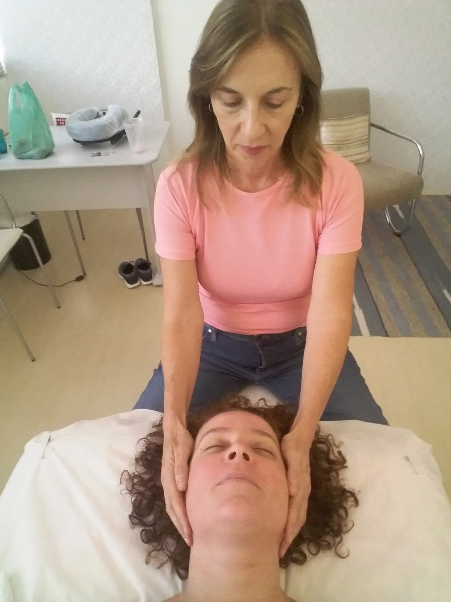
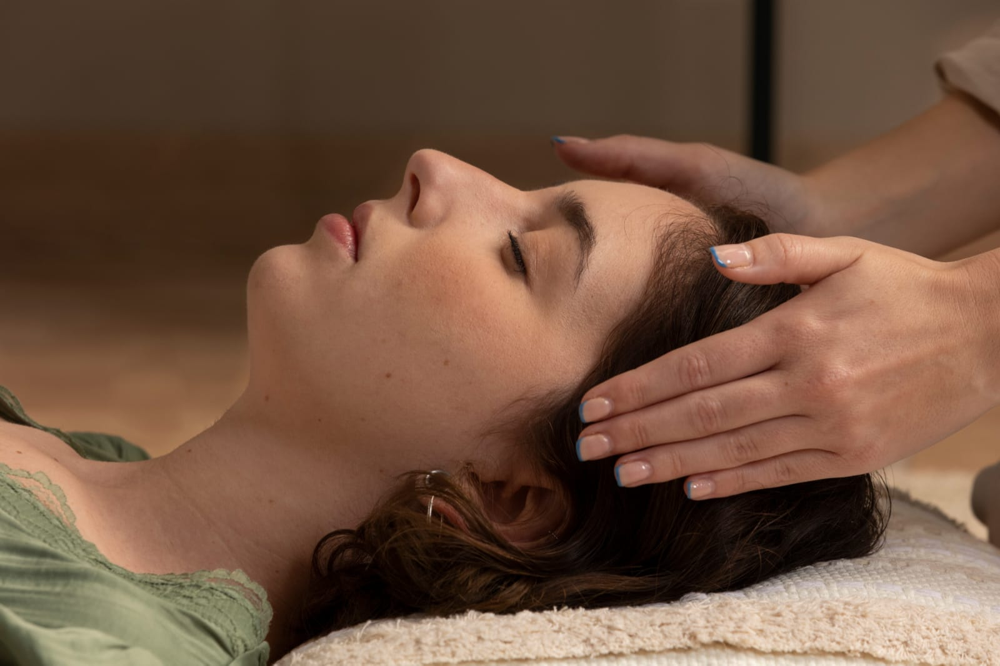

Uma abordagem que não usa pressões fortes, mas alcança as camadas mais profundas do seu bem-estar. Profundamente integrativa, totalmente não invasiva, ela renova o sistema nervoso.

Imagine uma abordagem terapêutica que não utiliza pressões fortes, mas que alcança as camadas mais profundas do seu bem-estar. A Terapia Craniossacral é exatamente isso: um método profundamente integrativo e totalmente não invasivo, que atua diretamente sobre o sistema craniossacral, o ambiente dinâmico onde o seu sistema nervoso central se restabelece.
Desenvolvida originalmente pelo renomado médico americano Dr. John Upledger, tive a honra de lapidar e aprofundar minha prática com o pioneiro fisioterapeuta John Barnes, discípulo direto de Upledger. Há 26 anos, transformo essa técnica em um espaço de escuta silenciosa e regeneração para os meus clientes.

Através de um toque extremamente leve e preciso, o terapeuta detecta e libera as restrições e tensões acumuladas nas fáscias e no sistema de membranas que envolvem o cérebro e a medula espinhal.
É uma verdadeira conversa silenciosa com o corpo, que estimula a autocura e devolve o ritmo natural ao seu organismo.
Por atuar na raiz das tensões físicas e emocionais, a Terapia Craniossacral oferece um alívio duradouro para diversas condições. Entre os principais benefícios, destacam-se:
Se você busca um tratamento que respeite o tempo e a sensibilidade do seu corpo, sem manobras bruscas, mas com resultados que reverberam profundamente na sua qualidade de vida, convido você a vivenciar essa experiência.
Agende sua sessão